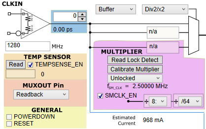
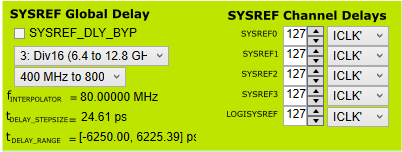
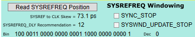
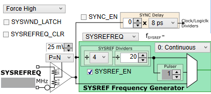
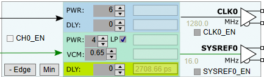
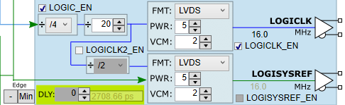

TICS Pro Interface — LMX1205 Explained
Every panel, dropdown, button, and number in the Texas Instruments TICS Pro GUI for the LMX1205 decoded block-by-block — no prior RF or tool experience needed.

This is the starting point for any TICS Pro session. You tell the tool how fast your incoming clock is, choose whether to buffer, divide, or multiply it, and set up diagnostic and power controls. The pink shaded sub-panel belongs entirely to the on-chip multiplier (PLL + VCO).
CLK_MUX register):
- Buffer — pass-through at the same frequency (÷1). Lowest noise.
- Div2/x2 … Div8/x8 — divides or multiplies by the selected factor. The dropdown shows both the divide and multiply options for each ratio.
rb_LOCK_DETECT bit from the chip via SPI and displays whether the
multiplier's internal VCO is Locked or Unlocked. You must
wait for "Locked" before enabling outputs in multiplier mode — an unlocked VCO will produce
the wrong frequency or a noisy output. The MUXOUT pin also shows this in hardware.
- The very first time the chip powers up in multiplier mode
- Whenever you change the multiply factor
- Whenever you change the input frequency
Rules: must be <30 MHz; must be at least 2× faster than the SPI write speed; must be present for calibration and lock detection to work.
SMCLK_DIV_PRE and the second (÷64) is SMCLK_DIV. TICS Pro
automatically suggests valid values when you change the CLKIN frequency, but you can override
them manually. Together: 1280 MHz ÷ 8 ÷ 64 = 2.5 MHz.
rb_TEMPSENSE register from the chip and shows the raw code. Convert to
temperature with: T (°C) = 0.65 × Code − 351.
Useful for thermal characterisation or to diagnose overheating. The TEMPSENSE_EN checkbox must
be checked for the sensor to power up.
- Readback — outputs SPI register data during a readback transaction (tri-stated otherwise)
- Lock Detect — drives HIGH when the multiplier VCO is locked
- Other internal status signals
RESET: Triggers a software power-on reset — all registers return to their factory defaults (buffer mode, all SYSREFs off). The bit self-clears after the first subsequent register write. Use this at startup to guarantee a clean initial state.

This panel controls the fine timing position of every SYSREF output relative to the clock outputs. It splits into two halves: a global delay generator that sets the step size (left), and per-channel delay codes that set how many steps each SYSREF output is offset (right). Getting SYSREF timing right is the key step for JESD204C Subclass 1 deterministic latency.
When checked: the delay generator is bypassed — SYSREF goes out with zero additional delay. Use bypass only if you don't need fine positioning, or to measure the raw propagation delay before applying corrections.
- CLKIN ≤ 0.8 GHz → Div2
- 0.8–1.6 GHz → Div2
- 1.6–3.2 GHz → Div4
- 3.2–6.4 GHz → Div8
- 6.4–12.8 GHz → Div16
StepSize = SYSREF_DLY_DIV / (fCLKIN × 508)
Here: 16 / (1280 MHz × 508) = 24.61 ps per step. At 12.8 GHz input the step size shrinks to <2.5 ps. This tells you how precisely you can position the SYSREF edge.
Total Delay = StepSize × Code
With step 24.61 ps and code 127: delay ≈ 3125 ps. Set all five to the same value if your PCB routes all SYSREF outputs identically; adjust individually if trace lengths differ.
ICLK* (with asterisk) means the interpolator reference is derived from the
same divider as the corresponding clock output — the recommended and most common setting.
Changing this affects the phase relationship between SYSREF and DCLK; only change it if
you have a specific skew requirement.

This panel is about measuring and optimising how the chip captures the incoming SYSREFREQ signal. When the LMX1205 is in Repeater or Retime mode it needs to sample the external SYSREFREQ pulse at just the right moment relative to CLKIN — this panel shows the measured skew and lets the chip auto-centre its capture window.
SYSREF to CLK Skew = 73.1 ps
This means the SYSREFREQ edge arrives 73.1 ps before the next CLKIN edge. The windowing circuit uses this measurement to set an optimal capture timing.
SYSREFREQ_DLY. This code shifts the internal sampling window so that the
SYSREFREQ edge lands comfortably in the centre of the capture window — maximising setup and
hold margin. Write this recommended value to the chip to prevent
metastability or missed-capture errors.
100 0011 0000 0000 0001 1000 0000 0000 1 is the complete SPI word for the
SYSREFREQ windowing register. Useful for debugging: if the chip is behaving unexpectedly,
compare this to the device register map in the datasheet to confirm the correct bits are set.

This is the SYSREF engine — where you choose whether the chip generates SYSREF internally, repeats an external one, or fires a one-shot pulse burst. It also contains the SYNC feature (phase-aligns all internal dividers across one or multiple devices) and the frequency divider chain that sets the SYSREF output frequency.
SYSREF_MODE:
- 0: Continuous — SYSREF pulses repeat forever at the programmed frequency. Easiest for debug; may cause crosstalk at high frequencies in production.
- 1: Pulser — fires a burst of N pulses (set by the Pulser spinner) each time triggered. Preferred in production — zero crosstalk between alignment events.
- 2: Repeater — buffers the SYSREFREQ input and fans it out to all outputs.
- 3: Repeater Retime — re-times SYSREFREQ to CLKIN before distributing — cleanest edges, eliminates metastability.
SYSREFREQ_INPUT):
- Force High — software-forces the internal trigger signal high, causing SYSREF to generate/pulse immediately without needing an external pin. Use for bench testing.
- SYSREFREQ pin — generation is gated by the physical SYSREFREQ_P/N input — an external device sends the trigger.
SYSREF_PULSE_CNT). The screenshot shows 1 pulse. Most JESD204C applications
need only 1 pulse to latch all converters. Some older systems need 2 or 4 to guarantee
all converters see the pulse despite different propagation delays.
fSYSREF = fCLKIN / (SYSREF_DIV_PRE × SYSREF_DIV)
Here: 1280 / (4 × 20) = 16 MHz. The first divider (
SYSREF_DIV_PRE
= ÷4) must bring the signal below 3.2 GHz before the second divider (SYSREF_DIV
= ÷20, range ÷2–4095) takes it to the final frequency.
Note: odd SYSREF_DIV values do not give a 50 % duty cycle.
fINTERPOLATOR mod fSYSREF = 0).
SYNC_EN). When triggered, SYNC simultaneously resets
all internal dividers (clock output dividers, LOGICLK dividers, SYSREF dividers) to a known
phase state. This is essential for multi-device synchronisation: you can
tie the SYNC pin of multiple LMX1205 chips together so they all reset in unison, giving
deterministic phase relationships across a whole board.

Each of the four main clock outputs (CH0–CH3) has its own identical panel. The top half controls the clock output buffer (CLKOUT); the bottom half (green/yellow background) controls the paired SYSREF output buffer (SYSREFOUT). Both halves have independent power and delay settings.
CH_EN controls the entire internal channel
path (signal routing inside the chip). CLK_EN only gates the output buffer (the driver
that actually drives the pin). To save the most power, disable CH_EN. To just silence the output
pin while keeping the internal path alive (e.g. during SYNC), disable CLK_EN only.
CLKx_PWR), from 1 (minimum,
lowest current) to 6 (maximum, highest drive). Higher values push more current into the load,
increasing the output voltage swing. At PWR = 6 and 6 GHz, the single-ended
output power is approximately +4.8 dBm into 50 Ω. Lower values reduce power consumption but
also reduce voltage margin at the receiver.
CLK0_DLY). Range 0–64,
step size ≈0.9 ps. Set different values on CLKOUT0–3 to compensate for different PCB trace
lengths to each converter. The calculated absolute delay in picoseconds appears as a tooltip
or alongside the field in the tool (2708.66 ps propagation + 0 adjustment here).
Tip: Use output delay ≥ 4 for frequencies below 1.5 GHz for best noise performance.
SYSREF0_PWR = 0–7) and
enables Low Power mode (SYSREF0_PWR_LOW). In LP mode, the same PWR code
delivers about half the output swing — useful when your receiver needs a lower-amplitude
SYSREF or when you are trying to reduce power. The table in the datasheet maps each
combination to the actual VOD swing.
SYSREF0_VCM) — the DC level that
both SYSREF0_P and SYSREF0_N hover around. 0.65 V here. The LMX1205 is unusual in that its
SYSREF outputs can be DC-coupled (unlike the CLKOUT pins which must be
AC-coupled). Setting VCM correctly is critical for DC coupling — it must match the receiver's
expected common-mode input level.
Total = Global Steps × StepSize + (this code × StepSize)
The displayed value (2708.66 ps) is the absolute propagation delay from CLKIN to the SYSREF output pin — useful for calculating the expected CLKOUT-to-SYSREF skew at the ADC input.
Min: automatically sets the delay code to the minimum non-zero value, snapping the SYSREF edge as early as possible within the available delay range. Useful as a starting point before fine-tuning.

This panel configures the two lower-frequency clock outputs — LOGICLKOUT0 and LOGICLKOUT1 / LOGISYSREFOUT — that are typically used to drive FPGAs and digital processors. They use a separate, deeper divider chain than the main CLKOUT channels so they can reach much lower frequencies (down to ≈1 MHz), while remaining phase-coherent with the main clocks.
fLOGICLK0 = fCLKIN / (DIV_PRE × DIV)
Here: 1280 / (4 × 20) = 16 MHz.
LOGICLK_DIV_PRE(÷4): must bring the signal to ≤3.2 GHz — mandatory for CLKIN >6.4 GHz.LOGICLK_DIV(÷20): the main divider, range ÷1–1023. Odd values give non-50% duty cycle.
The ÷/2 spinner (
LOGICLK2_DIV) adds an additional divide on top of the
LOGICLKOUT0 frequency — options are ÷1, ÷2, ÷4, ÷8. So if LOGICLKOUT0 = 16 MHz and
LOGICLK2_DIV = ÷2, then LOGICLKOUT1 = 8 MHz. Useful for systems needing two different
logic-rate clocks from the same chip.
LOGICLK_FMT):
- LVDS — Low-Voltage Differential Signalling. No external components needed. Common-mode voltage is programmable via VCM. Most FPGAs accept LVDS natively.
- CML — Current Mode Logic. Requires 50 Ω pull-up resistors to VCC on the board. Higher bandwidth but more board complexity.
LOGICLK_PWR), range 0–7. Codes
0–7 map to output swings from ~0.1 V to ~0.5 V single-ended peak-to-peak in LVDS mode.
PWR = 5 gives approximately 0.35 V single-ended swing — a typical standard LVDS level.
Higher PWR increases swing but also current draw (~85 mA total for the LOGICLK section).
LOGICLK_VCM). Code 2
corresponds to approximately 1.18 V common-mode. TICS Pro shows the valid VCM range for
each PWR setting (some codes are invalid for certain PWR levels and are greyed out). Match
this to your FPGA's LVDS input common-mode specification — usually 0.9–1.25 V.
- Edge — selects which clock edge the output is aligned to.
- Min — snaps to the minimum valid delay code.
- DLY: 0 — the per-output delay code for LOGICLKOUT0. The propagation delay shown (2708.66 ps) is the same as the main channel — both are derived from the same CLKIN, so their absolute delays are comparable.
LOGICLK_EN). Check LOGICLK_EN to actually drive the pin — even if
LOGIC_EN is on, the output buffer is separately gated so you can keep the divider chain
running during SYNC without glitching the FPGA clock.